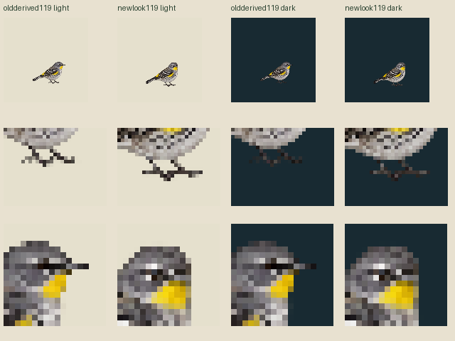

One actual new head-look and exact existing awake source reuse. Head/bill turn reads; toes/feet reconfigure again and lowestrow92→96. No matchedlook completion assumed. Whole nativecanvas→119NN only, no fit/snap/paint/alpha cleanup.
Standalone119CSS/world119, density1, integerpivot71,93. Current96profile uses fractional37/46 density (outside parent1/2/4 requirement) and remains unchanged. World119.351351→119(-.294384%); oldworldpivot70.864865,93.243243→71,93(+.135135,-.243243). Metadata rounding is not foot registration.
Authored30Hz awake30/look12/awake30,72ticks2400ms. Finalsample71 held untildeadline. Candidateidle awake60 separate; currentblink60/3/27 unchanged. Contacts[]/geometryfalse/supportnull, no body bob/physicalsole or Macadmission.


Candidate119awake is a whole1024source derivative, not a new neutral drawing or an alteration of this legacyPNG/profile. CurrentMac/schema unknown; Zod/Sharp not run. Originalwarmedge/redpartialalpha retained.
Primary source · Exact density and rounding · Feet/stance diagnostics · Protected current sources